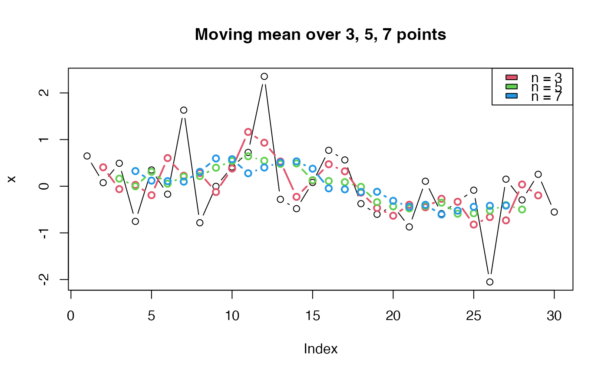

Calculate moving mean of n values "around" values
Usage
hsMovingMean(x, n, na.rm = FALSE)
Arguments
- x
vector of values of which moving mean is to be calculated
- n
number of values "around" the values in x, including the
values in x, of which the mean is calculated. Only odd numbers 1, 3,
5, ... allowed. For each x[i] in x the moving mean is calculated by:
(x[i-(n-1)/2] + ... + x[i-1] + x[i] + x[i+1] + ... + x[i+(n-1)/2]) / n
- na.rm
logical. Should missing values (including NaN) be omitted from
the calculations?
Value
Vector of moving means with the same number of values as there are in
x. If na.rm is FALSE, the first (n-1)/2 values and the last
(n-1)/2 values are NA since there are not enough values at the start
and the end of the vector to calculate the mean.
Examples
x <- rnorm(30)
plot(x, type = "b", main = "Moving mean over 3, 5, 7 points")
times <- 2:4
for (i in times) {
lines(hsMovingMean(x, n = 2*i - 1), col = i, type = "b", lwd = 2)
}
legend("topright", fill = times, legend = sprintf("n = %d", 2*times - 1))
